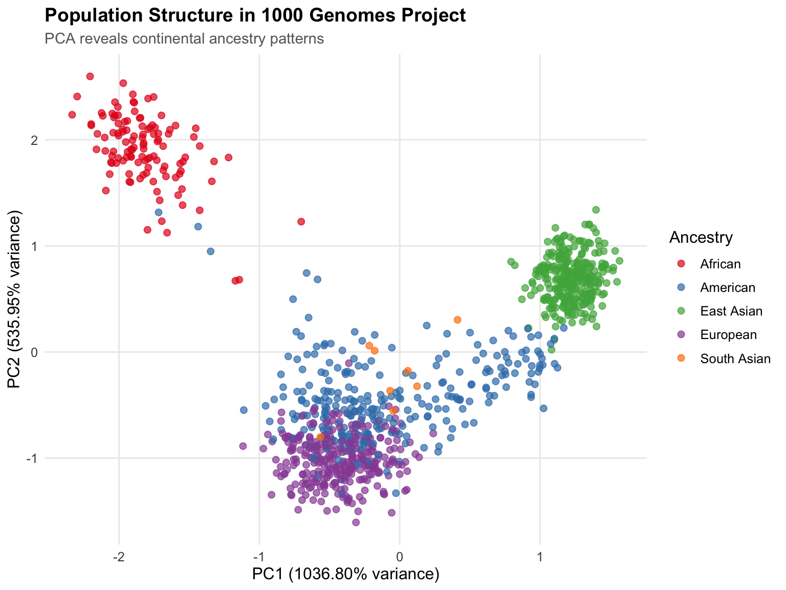
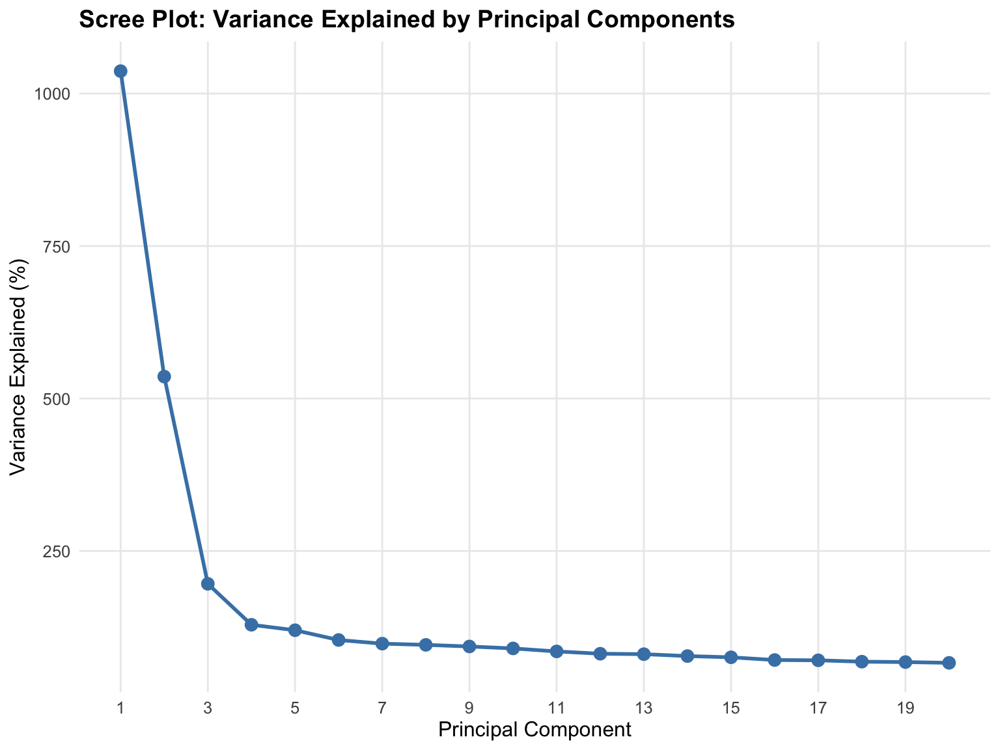

library(BigDataStatMeth)
library(gdsfmt)
library(rhdf5)
# Download genomic data (GDS format)
download.file(
url = paste0("https://raw.githubusercontent.com/isglobal-brge/",
"Supplementary-Material/master/Pelegri-Siso_2025/",
"application_examples/PCA/data/1000G_ethnic.zip"),
destfile = "1000G_ethnic.zip"
)
# Extract
unzip("1000G_ethnic.zip")
# Download phenotype data (population labels)
pheno_url <- paste0("https://raw.githubusercontent.com/isglobal-brge/",
"Supplementary-Material/master/Pelegri-Siso_2025/",
"application_examples/PCA/data/1000G_samples.tsv")
download.file(pheno_url, destfile = "1000G_samples.tsv")Implementing PCA
Principal Component Analysis on Large-Scale Genomic Data
1 Overview
Principal Component Analysis (PCA) is fundamental in genomics for identifying population structure, detecting batch effects, and reducing dimensionality before association tests. This workflow demonstrates a complete PCA implementation on real-world scale genomic data using BigDataStatMeth, from raw GDS files through quality control to publication-quality visualizations.
Unlike tutorial examples with synthetic data, this workflow uses realistic dataset dimensions (hundreds of thousands of variants, thousands of samples) and addresses practical challenges you’ll face with real data: file format conversions, multi-step quality control, computational optimization, and result interpretation. Think of this as the blueprint for your actual genomic PCA analyses.
1.1 What You’ll Learn
By the end of this workflow, you will:
- Convert GDS (Genomic Data Structure) files to HDF5 format for analysis
- Apply comprehensive quality control for genomic data
- Perform block-wise PCA on datasets too large for memory
- Optimize computational parameters for your hardware
- Interpret variance explained and principal component loadings
- Create publication-quality PCA plots showing population structure
- Export results for downstream analyses
- Understand when and why each processing step matters
2 The Dataset
We’ll analyze the 1000 Genomes Project data, which provides genetic variants from diverse human populations. This represents a realistic scale for many genomic studies:
- Samples: 2,504 individuals from 26 populations
- Variants: ~800,000 SNPs after standard QC
- File size: ~2-3 GB in GDS format
- Analysis goal: Identify continental ancestry structure
This dataset is small enough to complete on a workstation but large enough that naive approaches (loading everything into memory, using standard R PCA) become problematic. It perfectly illustrates when and why BigDataStatMeth becomes necessary.
3 Step 1: Data Preparation
3.1 Download the Example Data
The 1000 Genomes ethnic subset is available from the BigDataStatMeth supplementary materials:
NoteGDS Format
GDS (Genomic Data Structure) is a container format commonly used for genomic data from sequencing studies. The gdsfmt and SeqArray packages provide tools to work with GDS files. We’ll convert to HDF5 because BigDataStatMeth operates on HDF5 matrices, and this conversion pattern applies to any genomic data source.
3.2 Convert GDS to HDF5
Genomic data often arrives in specialized formats (GDS, VCF, PLINK). BigDataStatMeth needs numeric matrices in HDF5 format, so conversion is the first step:
# Open GDS file
gds_file <- "1000G_ethnic.gds"
gds <- openfn.gds(gds_file)
# Extract genotype matrix
geno_node <- index.gdsn(gds, "genotype")
genotype <- read.gdsn(geno_node)
# Extract sample and variant identifiers
sample_ids <- read.gdsn(index.gdsn(gds, "sample.id"))
snp_ids <- read.gdsn(index.gdsn(gds, "snp.rs.id"))
# Assign meaningful row and column names
rownames(genotype) <- sample_ids
colnames(genotype) <- snp_ids
# Close GDS file
closefn.gds(gds)
genotype <- genotype[1:1000,]
# Check dimensions before proceeding
cat("Genotype matrix dimensions:\n")Genotype matrix dimensions:cat(" Samples:", nrow(genotype), "\n") Samples: 1000 cat(" SNPs:", ncol(genotype), "\n") SNPs: 78322 cat(" Missing data:",
sprintf("%.2f%%", sum(is.na(genotype))/length(genotype)*100), "\n") Missing data: 0.00% Now convert to HDF5, organizing logically for subsequent analyses:
# Create HDF5 file with organized structure
pca_file <- "1000G_pca_analysis.hdf5"
bdCreate_hdf5_matrix(
filename = pca_file,
object = genotype,
group = "raw_data",
dataset = "genotypes",
transp = FALSE, # Keep samples as rows, SNPs as columns
overwriteFile = TRUE
)$fn
[1] "1000G_pca_analysis.hdf5"
$ds
[1] "raw_data/genotypes"cat("✓ HDF5 file created:", pca_file, "\n")✓ HDF5 file created: 1000G_pca_analysis.hdf5 h5ls(pca_file) group name otype dclass
0 / raw_data H5I_GROUP
1 /raw_data .genotypes_dimnames H5I_GROUP
2 /raw_data/.genotypes_dimnames 1 H5I_DATASET COMPOUND
3 /raw_data/.genotypes_dimnames 2 H5I_DATASET COMPOUND
4 /raw_data genotypes H5I_DATASET INTEGER
dim
0
1
2 2504
3 78322
4 2504 x 78322
TipOrganizing Your HDF5 File
We create a /raw_data/ group for the original genotypes. Subsequent QC steps will create /quality_control/ for filtered data, and /analysis/pca/ for results. This mirrors a typical analysis workflow and keeps intermediate steps traceable. If you need to rerun QC with different thresholds, raw data remains untouched.
4 Step 2: Quality Control
4.1 Remove Low-Quality Samples
Samples with excessive missing data often indicate technical problems (poor DNA quality, sequencing failures). We filter samples before variant-level QC:
# Remove samples with >5% missing data
sample_qc <- bdRemovelowdata_hdf5(
filename = pca_file,
group = "raw_data",
dataset = "genotypes",
outgroup = "quality_control",
outdataset = "samples_qc",
bycols = FALSE, # Operate on rows (samples)
pcent = 0.05,
overwrite = TRUE
)
cat("Sample QC results:\n")Sample QC results:cat(" Samples removed:", sample_qc$elements_removed, "\n") Samples removed: cat(" Samples retained:", sample_qc$elements_retained, "\n") Samples retained: 4.2 Remove Low-Frequency and High-Missingness SNPs
Rare variants (low minor allele frequency) provide little information for PCA and can introduce noise. Similarly, SNPs with high missingness are unreliable:
# Remove SNPs with >5% missing data
snp_missing_qc <- bdRemovelowdata_hdf5(
filename = pca_file,
group = "quality_control",
dataset = "samples_qc",
outgroup = "quality_control",
outdataset = "snps_missing_qc",
bycols = TRUE, # Operate on columns (SNPs)
pcent = 0.05,
overwrite = TRUE
)
cat("SNP missingness QC:\n")SNP missingness QC:cat(" SNPs removed:", snp_missing_qc$elements_removed, "\n") SNPs removed: cat(" SNPs retained:", snp_missing_qc$elements_retained, "\n") SNPs retained: # Remove SNPs with MAF < 5%
maf_qc <- bdRemoveMAF_hdf5(
filename = pca_file,
group = "quality_control",
dataset = "snps_missing_qc",
outgroup = "quality_control",
outdataset = "snps_qc_complete",
maf = 0.05,
bycols = TRUE,
blocksize = 1000,
overwrite = TRUE
)
cat("MAF QC:\n")MAF QC:cat(" SNPs removed:", maf_qc$elements_removed, "\n") SNPs removed: cat(" SNPs retained:", maf_qc$elements_retained, "\n") SNPs retained:
ImportantQC Ordering Matters
We filter samples first, then SNP missingness, then MAF. Why this order?
- Samples first: Removing low-quality samples changes allele frequencies and missingness calculations for SNPs
- Missingness before MAF: SNPs with high missingness have unreliable allele frequency estimates
- MAF last: After removing missing data, MAF calculations are accurate
Reversing this order produces different results. The standard practice is sample → missingness → MAF.
4.3 Impute Remaining Missing Data
After QC, remaining missingness is typically <1-2%. Simple mean imputation suffices for this low level:
# Impute missing values with column (SNP) means
bdImputeSNPs_hdf5(
filename = pca_file,
group = "quality_control",
dataset = "snps_qc_complete",
bycols = TRUE,
outgroup = "quality_control",
outdataset = "genotypes_imputed",
overwrite = TRUE
)$fn
[1] "1000G_pca_analysis.hdf5"
$ds
[1] "quality_control/snps_qc_complete"cat("✓ Missing data imputed\n")✓ Missing data imputed# Verify no missing data remains
h5file <- H5Fopen(pca_file)
imputed_data <- h5file$quality_control$genotypes_imputed
cat("Missing values remaining:", sum(is.na(imputed_data[1:100, 1:100])), "\n")Missing values remaining: 0 H5Fclose(h5file)5 Step 3: Perform PCA
5.1 Understanding the Parameters
PCA on large matrices uses hierarchical block-wise SVD. Key parameters:
- k: Number of blocks to partition the matrix into
- q: Number of hierarchical levels
- Components: How many PCs to compute (typically 10-50)
- Centering: Almost always TRUE for PCA
- Scaling: Usually FALSE for SNP data (all same units)
# Perform block-wise PCA
pca_result <- bdPCA_hdf5(
filename = pca_file,
group = "quality_control",
dataset = "genotypes_imputed",
k = 4, # 4 blocks balances memory and speed
q = 1, # 1 level sufficient for this data size
bcenter = TRUE, # Center SNPs (subtract column means)
bscale = FALSE, # Don't scale (SNPs same units)
ncomponents = 20, # Compute first 20 PCs
threads = 4, # Use 4 threads (adjust to your CPU)
overwrite = TRUE
)
cat("✓ PCA complete\n")✓ PCA complete
NoteComputational Considerations
For this dataset (~2500 samples × ~80,000 SNPs after QC): - Memory usage: Peak ~4-6 GB with k=4 - Computation time: ~2-5 minutes on modern CPU - Threads: Diminishing returns beyond physical cores
Larger datasets (50,000 samples × 500,000 SNPs) might need k=8-16 and q=2 for reasonable memory usage.
6 Step 4: Extract and Examine Results
6.1 Load PCA Components
# Open file to access PCA results
h5file <- H5Fopen(pca_file)
# Extract components (the principal components themselves)
pcs <- h5file$PCA$genotypes_imputed$components
pcs <- as.data.frame(pcs)
colnames(pcs) <- paste0("PC", 1:ncol(pcs))
# Add sample IDs
sample_names <- h5file$raw_data$.genotypes_dimnames$`1`[,1]
pcs$sample_id <- sample_names[1:nrow(pcs)] # Account for samples removed in QC
# Extract variance explained
variance_prop <- h5file$PCA$genotypes_imputed$variance[,1]
H5Fclose(h5file)
# Preview principal components
cat("\nFirst 5 samples, first 5 PCs:\n")
First 5 samples, first 5 PCs:print(pcs[1:5, 1:6]) # First 5 PCs + sample_id PC1 PC2 PC3 PC4 PC5 PC6
1 -0.2853922 -1.3649065 0.6454470 1.1533012 -1.2112287 0.3623916
2 -0.7943544 -0.8494820 1.2276331 -1.9259606 -1.1051614 0.2707729
3 -0.4685347 -0.8840233 0.4830970 1.7655353 1.1815834 0.2693867
4 -0.2310929 -1.0369896 0.2354575 -0.2605435 -0.8110573 0.3939840
5 -0.3307356 -1.0352414 0.5485452 -0.6088280 -0.4052957 2.0210173# Variance explained summary
cat("\nVariance explained by each PC:\n")
Variance explained by each PC:variance_df <- data.frame(
PC = 1:length(variance_prop),
Variance = sprintf("%.2f%%", variance_prop),
Cumulative = sprintf("%.2f%%", cumsum(variance_prop))
)
print(variance_df[1:10, ]) PC Variance Cumulative
1 1 10.37% 10.37%
2 2 5.36% 15.73%
3 3 1.96% 17.69%
4 4 1.29% 18.98%
5 5 1.20% 20.18%
6 6 1.04% 21.22%
7 7 0.98% 22.20%
8 8 0.96% 23.16%
9 9 0.93% 24.09%
10 10 0.90% 24.99%
TipInterpreting Variance Explained
For population structure PCA: - PC1-PC2 typically explain 2-5% each for global ancestry - PC1-PC10 together often explain 10-20% - Low variance per PC is expected - population structure is subtle
Red flags: - PC1 >50%: Possible batch effect or technical artifact - PC1-10 <5% total: Either very homogeneous population or too much noise - Sudden drop after PC1: Might indicate strong population stratification
For this 1000 Genomes data, expect PC1 ~3-5% (continental ancestry) and PC2 ~2-3% (finer structure).
7 Step 5: Visualize Population Structure
7.1 Merge with Population Labels
library(tidyverse)
# Load population information
pheno <- read_delim(
"1000G_samples.tsv",
delim = "\t",
show_col_types = FALSE
)
# Merge PCs with phenotype data
pca_data <- pcs %>%
left_join(pheno, by = c("sample_id" = "Sample name"))
# Check merge success
cat("Samples with population labels:",
sum(!is.na(pca_data$`Superpopulation code`)), "\n")Samples with population labels: 1000 7.2 Create PCA Plot
library(ggplot2)
# Define population colors
pop_colors <- c(
"AFR" = "#E41A1C", # African - Red
"AMR" = "#377EB8", # American - Blue
"EAS" = "#4DAF4A", # East Asian - Green
"EUR" = "#984EA3", # European - Purple
"SAS" = "#FF7F00" # South Asian - Orange
)
# Create PCA plot
pca_plot <- ggplot(
pca_data,
aes(x = PC1, y = PC2, color = `Superpopulation code`)
) +
geom_point(size = 2, alpha = 0.7) +
scale_color_manual(
values = pop_colors,
name = "Ancestry",
labels = c(
"AFR" = "African",
"AMR" = "American",
"EAS" = "East Asian",
"EUR" = "European",
"SAS" = "South Asian"
)
) +
labs(
title = "Population Structure in 1000 Genomes Project",
subtitle = "PCA reveals continental ancestry patterns",
x = sprintf("PC1 (%.2f%% variance)", variance_prop[1] * 100),
y = sprintf("PC2 (%.2f%% variance)", variance_prop[2] * 100)
) +
theme_minimal() +
theme(
text = element_text(size = 12),
plot.title = element_text(size = 14, face = "bold"),
plot.subtitle = element_text(size = 11, color = "gray40"),
legend.position = "right",
panel.grid.minor = element_blank()
)
print(pca_plot)
# Save plot
ggsave(
"pca_population_structure.png",
pca_plot,
width = 10,
height = 7,
dpi = 300
)
cat("✓ Plot saved to pca_population_structure.png\n")✓ Plot saved to pca_population_structure.png7.3 Scree Plot for Variance
# Prepare data for scree plot
n_show <- min(20, length(variance_prop))
scree_data <- data.frame(
PC = 1:n_show,
Variance = variance_prop[1:n_show] * 100
)
# Create scree plot
scree_plot <- ggplot(scree_data, aes(x = PC, y = Variance)) +
geom_line(color = "steelblue", size = 1) +
geom_point(color = "steelblue", size = 3) +
labs(
title = "Scree Plot: Variance Explained by Principal Components",
x = "Principal Component",
y = "Variance Explained (%)"
) +
theme_minimal() +
theme(
text = element_text(size = 12),
plot.title = element_text(size = 14, face = "bold"),
panel.grid.minor = element_blank()
) +
scale_x_continuous(breaks = seq(1, n_show, by = 2))
print(scree_plot)
ggsave(
"pca_scree_plot.png",
scree_plot,
width = 8,
height = 6,
dpi = 300
)8 Step 6: Export Results
8.1 Save Principal Components for Downstream Analysis
# Export first 10 PCs for association testing
pcs_export <- pcs[, c("sample_id", paste0("PC", 1:10))]
write.table(
pcs_export,
file = "principal_components_1000G.txt",
sep = "\t",
row.names = FALSE,
quote = FALSE
)
cat("✓ Principal components exported to principal_components_1000G.txt\n")✓ Principal components exported to principal_components_1000G.txtcat(" Samples:", nrow(pcs_export), "\n") Samples: 1000 cat(" PCs included: 10\n") PCs included: 10
NoteUsing PCs in Downstream Analyses
These PCs can be included as covariates in:
- GWAS: Adjust for population stratification
- Expression QTL mapping: Control for ancestry
- Polygenic risk scores: Account for population structure
- Clustering: Define ancestry-matched subcohorts
Standard practice uses PC1-10, though some studies include PC1-20 for fine-scale structure.
9 Interactive Exercise
9.1 Practice: Optimizing PCA for Your Data
Understanding how parameters affect computation helps you optimize analyses for your specific datasets and hardware.
# Exercise: Try different parameter combinations
# Scenario 1: Larger dataset (memory-constrained)
# You have 50,000 samples × 500,000 SNPs, 32 GB RAM
bdPCA_hdf5(
filename = your_file,
group = "qc",
dataset = "genotypes",
k = 16, # More blocks to reduce memory
q = 2, # Two levels for hierarchical processing
components = 10,
threads = 8
)
# Scenario 2: Small dataset (speed-focused)
# You have 1,000 samples × 10,000 SNPs, plenty of RAM
bdPCA_hdf5(
filename = your_file,
group = "qc",
dataset = "genotypes",
k = 2, # Fewer blocks (less overhead)
q = 1, # Single level
components = 20,
threads = 4
)
# Question: How does changing k affect your analysis?
TipReflection Questions
1. Parameter Selection: - For your data size, what k value balances memory and speed? - How do you decide between q=1 vs. q=2? - When would you compute 50 PCs instead of 20?
2. Quality Control Impact: - What if you skip MAF filtering? More noise, or more information? - How aggressive should missingness thresholds be? - When might you use different QC for different analyses?
3. Interpreting Results: - PC1 explains 4% of variance. Is that good or bad? - You see a cluster separate from all populations. What might it be? - PCs correlate with sequencing batch. How do you handle this?
4. Computational Scaling: - Your dataset doubles in size. How do parameters change? - You have limited RAM but many CPU cores. Optimize for what? - Accuracy vs. speed - when does each matter more?
5. Biological vs. Technical Structure: - How do you distinguish ancestry from batch effects? - Should you remove outliers before PCA or after? - When do you trust what the PCA shows?
Experiment with different settings on this dataset. Note how computation time, memory usage, and results change. This builds intuition for optimizing real analyses.
10 Key Takeaways
Let’s consolidate what you’ve learned about implementing PCA on large-scale genomic data using BigDataStatMeth.
10.1 Essential Concepts
PCA on genomic data serves specific purposes that differ from general dimensionality reduction. In genomics, PCA primarily identifies population structure and batch effects rather than reducing features for modeling. PC1-PC2 capture continental ancestry, PC3-PC10 capture finer population structure, and later PCs often reflect technical artifacts. Understanding these purposes guides interpretation - low variance explained isn’t a problem, it’s expected when analyzing subtle population differences.
Quality control determines PCA validity more than the PCA algorithm itself. Running PCA on un-QC’d data produces results that look mathematically correct but are scientifically meaningless. Remove low-quality samples first (they distort allele frequencies), then filter SNPs by missingness (high-missing SNPs are unreliable), then remove rare variants (low MAF adds noise). This ordering matters - sample QC affects SNP metrics, so samples must be filtered before SNP-level QC. Skipping or reordering these steps produces different, less reliable results.
Block-wise PCA enables analyses that traditional methods cannot handle. Standard R functions (prcomp(), svd()) require loading entire matrices into memory, failing when data exceeds RAM. BigDataStatMeth’s block-wise approach processes data in chunks, enabling PCA on datasets that are 10× or 100× larger than available memory. For the 1000 Genomes data (2-3 GB), this might seem unnecessary on modern workstations, but for whole-genome sequencing cohorts (50,000 samples × 10 million variants = 4 TB), block-wise processing becomes essential, not optional.
Centering is mandatory, scaling is context-dependent. Centering (subtracting column means) removes the origin from the data cloud, ensuring PC1 doesn’t just capture mean differences between SNPs. This is universally necessary for interpretable PCA. Scaling (dividing by standard deviations) equalizes variance across features, which helps when features have different units (mixing expression and metabolites) but obscures real biological variance differences in SNP data. For genomic PCA, center but don’t scale. For multi-omic integration, both centering and scaling may be needed.
Variance explained in population PCA is low by design. Seeing PC1 explain only 3-5% of total variance doesn’t indicate failure - it reflects biological reality. Human genetic variation is highly dimensional with many independent signals. Population structure is real but subtle compared to individual genetic variation. If PC1 explained 50% of variance in human genomic data, something is seriously wrong (likely a technical artifact, not biology). Low variance per component with clear population clustering indicates successful, valid PCA.
Parameter choice balances memory, speed, and accuracy. The k parameter (number of blocks) controls memory usage: larger k = less memory per block but more I/O overhead. The q parameter (hierarchy levels) determines how blocks are combined: q=1 works for moderate data, q=2 needed for very large matrices. The threads parameter enables parallelization but shows diminishing returns beyond physical CPU cores. For typical genomic analyses, k=4-8, q=1, and threads matching your cores provides good performance without extensive tuning.
PCA results require biological validation, not just statistical assessment. Mathematically perfect PCA can still be biologically meaningless. Validate by checking: Do populations cluster as expected? Do PCs correlate with known ancestry? Are there unexpected outliers (sequencing failures, sample swaps)? Does PC1 correlate with sequencing batch (technical artifact)? Statistical metrics (variance explained, eigenvalue ratios) tell you if PCA worked; biological validation tells you if results are meaningful.
10.2 When to Use This Workflow
Understanding when this comprehensive PCA workflow helps versus when simpler approaches suffice guides efficient analysis design.
✅ Use this workflow when:
Dataset size exceeds comfortable RAM limits - When traditional PCA fails with memory errors, or when loading data takes minutes, block-wise processing becomes necessary. Rule of thumb: if your data matrix is >30% of available RAM, use BigDataStatMeth’s approach to avoid memory issues during computation.
You’re analyzing genomic data for publication - The comprehensive QC → imputation → PCA → validation pipeline produces defensible, reproducible results. Reviewers expect proper QC, and this workflow documents every step. The organized HDF5 structure preserves intermediate results for supplementary materials or reanalysis with different parameters.
Population structure matters for your analysis - GWAS, rare variant analysis, and selection scans all require proper ancestry adjustment. This workflow identifies population structure reliably, providing covariates for downstream association tests. Skipping proper PCA leads to false positive associations driven by population stratification.
You need to optimize for available resources - The parameterized approach (k, q, threads) lets you tune for your specific hardware. With limited RAM but many cores, increase k and threads. With ample RAM but slow disk, decrease k to minimize I/O. This flexibility enables analysis on hardware ranging from laptops to HPC clusters.
The analysis will be extended or repeated - If you’ll add more samples, reanalyze with updated QC thresholds, or apply the same pipeline to multiple cohorts, having a documented workflow saves enormous time. Copy the structure, adjust file paths and parameters, execute. The HDF5 organization makes extending analyses straightforward.
✅ Adapt this workflow when:
Analyzing different omic types - Transcriptomics data needs log-transformation before PCA. Methylation data might need beta to M-value conversion. Proteomics might need scaling due to different abundance ranges. The workflow structure (QC → transformation → PCA → validation) remains constant, but specific operations change to match data characteristics.
Different QC stringency needed - Exploratory analyses tolerate more missingness and lower MAF than definitive GWAS. Imputation-based association tests need stricter QC than burden tests. Adjust thresholds (5% missingness vs. 10%, MAF 0.01 vs. 0.05) to match analysis goals and acceptable false discovery rates.
Computational constraints vary - On a laptop with 8 GB RAM, use k=16, q=2, process in smaller blocks. On a server with 256 GB RAM, use k=2-4, q=1, minimize overhead. The algorithm is the same, only parameters change to match available resources.
❌ Simpler approaches work better when:
Data easily fits in memory - If
prcomp(scale(data))works without issues, use it. Base R PCA is well-tested, well-documented, and integrates seamlessly with the broader R ecosystem. Don’t add HDF5 complexity when traditional methods suffice.Quality control already performed - If analyzing published data (like HapMap, 1000 Genomes processed files), extensive QC is redundant. These datasets are already filtered, imputed, and quality-controlled. Load, run PCA, interpret results. Don’t re-QC already-QC’d data.
Exploratory analysis on subsets - For quick exploration of chromosome 22 or a 1% random sample, simple approaches are faster. Extract subset, run standard PCA, visualize, iterate. Use this workflow when transitioning from exploration to production analysis on the full dataset.
No population structure expected - Analyzing inbred lines, cell cultures, or known-homogeneous populations doesn’t need population structure PCA. The analysis might still be useful for quality control (identifying outliers) but doesn’t serve its primary purpose of ancestry adjustment.
The key principle is matching workflow complexity to analysis needs and data scale. Large-scale genomic studies requiring QC, population structure identification, and resource optimization benefit from this comprehensive approach. Small-scale, exploratory, or already-QC’d analyses are better served by simpler methods.
11 Next Steps
Explore related workflows:
- Implementing CCA - Multi-omic integration using canonical correlation
- Cross-Platform Workflows - Using PCA results in Python and C++
Extend this analysis:
- Perform association tests using PCs as covariates
- Calculate genomic relationship matrices from PCs
- Identify population-specific outliers for closer inspection
- Compare PCA with other dimensionality reduction methods (UMAP, t-SNE)
Optimize for your data:
- Test different k, q, threads to find optimal settings
- Try different QC thresholds for different analysis types
- Explore ancestry-informative marker selection before PCA
- Implement cross-validation for PCA stability assessment
12 Cleanup
# Close any open HDF5 connections
h5closeAll()
# Note: Keep generated files for future reference
# - 1000G_pca_analysis.hdf5: Complete analysis with all steps
# - pca_population_structure.png: Publication plot
# - principal_components_1000G.txt: Covariates for downstream use